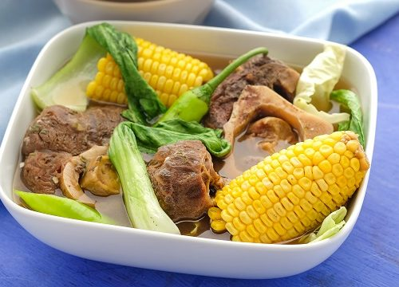

Bulalo Recipe

Description
Bulalô is a beef dish from the Philippines. It is a light colored soup
that is made by cooking beef shanks and bone marrow until the collagen and
fat has been melted into the clear broth. It typically includes leafy
vegetables, corn on the cob, scallions, onions, garlic, ginger, and fish
sauce.
Ingredients
- Beef Marrow Bones - 2
- Beef Shank - 1 pound
- Onion - 1
- Garlic - 3 cloves
- Black Peppercorns - 1 teaspoon
- Patis - 2 tablespoon
- Salt
- Corn - 2 cobs
- Chayote - 1
- Baby Bok Choy - 3
Steps
-
Boil a large pot of water. Add the marrow bones and beef shank and
return to a boil. Continue boiling until you don't see any more red
blood coming from the meat or bones (about 10 minutes), then remove the
meat and bones with tongs and scrub under cold water to remove any scum.
Dump the water in the pot out and rinse the pot. This process rids the
meat of excess blood and will ensure your soup is nice and clear.
-
Return the cleaned meat and bones to the pot then add the onion, garlic,
peppercorns and patis. Cover with water then bring it to a rolling boil
and skim off any scum that accumulates.
-
Reduce the heat to medium low. If you are using a pressure cooker, afix
the lid and let it cook for 1 ½ hours. If you're not using a pressure
cooker, simmer until the meat on the shank is fork tender (4-5 hours).
Skim off any excessive fat from the top but do not remove it all
(remember, fat=flavour). Transfer the meat and bones to a bowl, then
strain the stock through a fine mesh sieve, discard the solids then
return the meat and bones to the strained stock.
-
Add the corn and chayote and simmer for another 20 minutes or until the
chayote is tender. Salt to taste, then add the bok choy at the last
minute. Serve with rice.